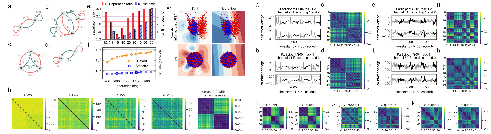
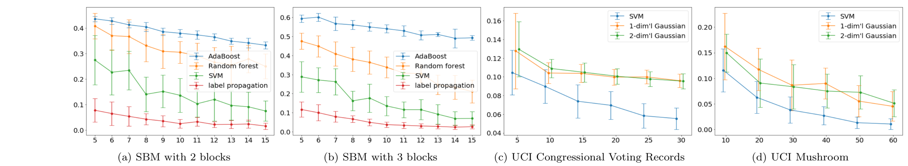
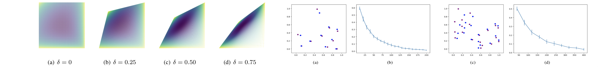
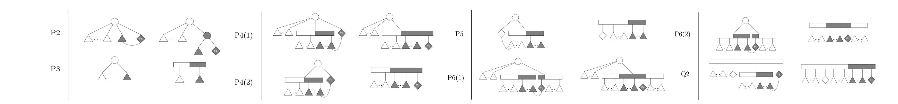
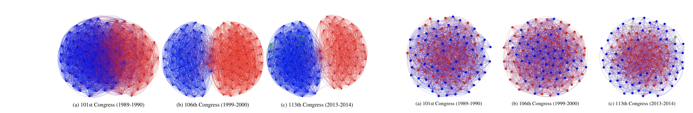
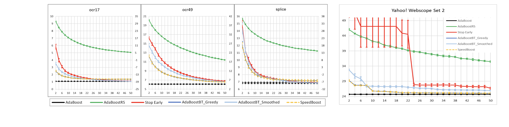

Publications
Dmitrii Torbunov, Yi Huang, Haiwang Yu, Jin Huang, Shinjae Yoo, Meifeng Lin, Brett Viren, Yihui Ren, UVCGAN: UNet Vision Transformer Cycle-consistent GAN for Unpaired Image-to-image Translation, WACV 2023
Abstract:: Unpaired image-to-image translation has broad applications in art, design, and scientific simulations. One early breakthrough was CycleGAN that emphasizes one-to-one mappings between two unpaired image domains via generative-adversarial networks (GAN) coupled with the cycle-consistency constraint, while more recent works promote one-to-many mapping to boost diversity of the translated images. Motivated by scientific simulation and one-toone needs, this work revisits the classic CycleGAN framework and boosts its performance to outperform more contemporary models without relaxing the cycle-consistency constraint. To achieve this, we equip the generator with a Vision Transformer (ViT) and employ necessary training and regularization techniques. Compared to previous best-performing models, our model performs better and retains a strong correlation between the original and translated image. An accompanying ablation study shows that both the gradient penalty and self-supervised pre-training are crucial to the improvement. To promote reproducibility and open science, the source code, hyperparameter configurations, and pre-trained model are available at https://github.com/LS4GAN/uvcgan.
Figure
 |
Yi Huang, Victor Rotaru, Ishanu Chattopadhyay, Sequence Likelihood Divergence For Fast Time Series Comparison, Knowledge and Information Systems 2022
Abstract: Comparing and contrasting subtle historical patterns is central to time series analysis. Here we introduce a new approach to quantify deviations in the underlying hidden stochastic generators of sequential discretevalued data streams. The proposed measure is universal in the sense that we can compare data streams without any feature engineering step, and without the need of any hyper-parameters. Our core idea here is the generalization of the Kullback-Leibler (KL) divergence, often used to compare probability distributions, to a notion of divergence between finite-valued ergodic stationary stochastic processes. Using this notion of process divergence, we craft a measure of deviation on finite sample paths which we call the sequence likelihood divergence (SLD) which approximates a metric on the space of the underlying generators within a well-defined class of discrete-valued stochastic processes. We compare the performance of SLD against the state of the art approaches, e.g., dynamic time warping (DTW) with synthetic data, real-world applications with electroencephalogram (EEG) data and in gait recognition, and on diverse time-series classification problems from the University of California, Riverside (UCR) time series classification archive. We demonstrate that the new tool is at par or better in classification accuracy, while being significantly faster in comparable implementations. Released in the publicly domain, we are hopeful that SLD will enhance the standard toolbox used in classification, clustering and inference problems in time series analysis.
The left figure is an example of the directed weighted graph obtained by analyzing the set of causal states of a stochastic process of Markov order two. The strongly connected component of the graph (marked by solid edges) is a probabilistic finite-state automaton that generates the process. The middle figure is a side-by-side semantic comparison of three time series models, the Markov chain model, the probabilistic finite-state automaton, and the hidden Markov model. The right figure shows convergence of log-likelihood scores to their theoretic values.
|  |
{kind=link}
Victor Rotaru, Yi Huang, Timmy Li, James Evans, Ishanu Chattopadhyay, Event-level Prediction of Urban Crime Reveals a Signature of Enforcement Bias in US Cities, (Supplementary Material), Nature Human Behaviour
Abstract: Policing efforts to thwart crime typically rely on criminal infraction reports, which implicitly manifest a complex relationship between crime, policing and society. As a result, crime prediction and predictive policing have stirred controversy, with the latest artificial intelligence-based algorithms producing limited insight into the social system of crime. Here we show that, while predictive models may enhance state power through criminal surveillance, they also enable surveillance of the state by tracing systemic biases in crime enforcement. We introduce a stochastic inference algorithm that forecasts crime by learning spatio-temporal dependencies from event reports, with a mean area under the receiver operating characteristic curve of approximately 90% in Chicago for crimes predicted per week within approximately 1000 ft. Such predictions enable us to study perturbations of crime patterns that suggest that the response to increased crime is biased by neighbourhood socio-economic status, draining policy resources from socio-economically disadvantaged areas, as demonstrated in eight major US cities.
Figure
Yi Huang, Ishanu Chattopadhyay, Universal Risk Phenotype of US Counties for Flu-like Transmission to Improve County Specific COVID-19 Incidence Forecasts, PLOS Computational Biology
Abstract: The spread of a communicable disease is a complex spatio-temporal process shaped by the specific transmission mechanism, and diverse factors including the behavior, socio-economic and demographic properties of the host population. While the key factors shaping transmission of influenza and COVID-19 are beginning to be broadly understood, making precise forecasts on case count and mortality is still difficult. In this study we introduce the concept of a universal geospatial risk phenotype of individual US counties facilitating flu-like transmission mechanisms. We call this the Universal Influenza-like Transmission (UnIT) score, which is computed as an information-theoretic divergence of the local incidence time series from an high-risk process of epidemic initiation, inferred from almost a decade of flu season incidence data gleaned from the diagnostic history of nearly a third of the US population. Despite being computed from the past seasonal flu incidence records, the UnIT score emerges as the dominant factor explaining incidence trends for the COVID-19 pandemic over putative demographic and socio-economic factors. The predictive ability of the UnIT score is further demonstrated via county-specific weekly case count forecasts which consistently outperform the state of the art models throughout the time-line of the COVID-19 pandemic. This study demonstrates that knowledge of past epidemics may be used to chart the course of future ones, if transmission mechanisms are broadly similar, despite distinct disease processes and causative pathogens.
Figure
Dmytro Onishchenko, Yi Huang, James van Horne, Peter J. Smith, Michael M. Msall, Ishanu Chattopadhyay, Reduced False Positives in Autism Screening via Digital Biomarkers Inferred From Deep Comorbidity Patterns, Science Advances
Abstract: Here, we develop digital biomarkers for autism spectrum disorder (ASD), computed from patterns of past medical encounters, identifying children at high risk with an area under the receiver operating characteristic exceeding 80% from shortly after 2 years of age for either sex, and across two independent patient databases. We leverage uncharted ASD comorbidities, with no requirement of additional blood work, or procedures, to estimate the autism comorbid risk score (ACoR), during the earliest years when interventions are the most effective. ACoR has superior predictive performance to common questionnaire-based screenings and can reduce their current socioeconomic, ethnic, and demographic biases. In addition, we can condition on current screening scores to either halve the state-of-the-art false-positive rate or boost sensitivity to over 60%, while maintaining specificity above 95%. Thus, ACoR can significantly reduce the median diagnostic age, reducing diagnostic delays and accelerating access to evidence-based interventions.
Figure
Victor Rotaru, Yi Huang, Ishanu Chattopadhyay, Timesmash: Process-aware Fast Time Series Clustering and Classification, AAAI-MLPS 2021
Abstract: We introduce Timesmash: a comprehensive suite of clustering and classification algorithms and their implementation as a eponymous python package for stochastic time series analysis. We leverage a subclass of hidden Markov model (HMM), called Probabilistic Finite-State Automaton (PFSA), which are used to first model in an unsupervised setting the underlying generative processes for observed data streams, which then aid in carrying out automatic physics or process aware featurization enabling subsequent clustering and classification. The algorithms in this suite consist of the following tools: a) LikelihoodDistance estimating in an unsupervised setting the divergence between ergodic stationary finite valued stochastic processes from the observation of finite and possibly unequal sample paths. b) Featurization algorithms SymbolicDerivative, InferredHMMLikelihood, and ClusteredHMMClassifier, which operate by aiming to recover the underlying hidden generator for the sample paths presented, which then may be used to automatically distill effective features for classification. Our core algorithms require the data streams to take values in a finite alphabet. To extend applicability to continuous-valued time series, a data-driven quantization algorithm, our implementation includes the tool Quantizer that discretizes continuous sequences without the assumption of domain knowledge. We evaluate the performance of the Timesmash algorithms on problems from the UCR Time Series Classification Archive, and show that we at par or better compared to the state of the art Dynamic Time Warping (DTW) algorithm. In addition, we include brief examples where our unsupervised physical modeling leads to insights not easily obtainable with the current state of the art.
Figure
Yi Huang, Yihui Ren, Shinjae Yoo, and Jin Huang, Efficient Data Compression for 3D Sparse TPC via Bicephalous Convolutional Autoencoder, ICMLA 2021
Abstract: Real-time data collection and analysis in large experimental facilities present a great challenge across multiple domains, including high energy physics, nuclear physics, and cosmology. To address this, machine learning (ML)-based methods for real-time data compression have drawn significant attention. However, unlike natural image data, such as CIFAR and ImageNet that are relatively small-sized and continuous, scientific data often come in as three-dimensional (3D) data volumes at high rates with high sparsity (many zeros) and non-Gaussian value distribution. This makes direct application of popular ML compression methods, as well as conventional data compression methods, suboptimal. To address these obstacles, this work introduces a dual-head autoencoder to resolve sparsity and regression simultaneously, called Bicephalous Convolutional AutoEncoder (BCAE). This method shows advantages both in compression fidelity and ratio compared to traditional data compression methods, such as MGARD, SZ, and ZFP. To achieve similar fidelity, the best performer among the traditional methods can reach only half the compression ratio of BCAE. Moreover, a thorough ablation study of the BCAE method shows that a dedicated segmentation decoder improves the reconstruction.
Figure
Tingran Gao, Shahab Asoodeh, Yi Huang, James Evens, Wasserstein Soft Label Propagation on Hypergraphs: Algorithm and Generalization Error Bounds, (Supplemental Material), AAAI 2019
Abstract: Inspired by recent interests in developing machine learning and data mining algorithms for hypergraphs, here we investigate the semi-supervised learning algorithm of propagating “soft labels” (e.g. probability distributions, class membership scores) over hypergraphs, by means of optimal transportation. Borrowing insights from Wasserstein propagation on graphs [Solomon et al. 2014], we reformulate the label propagation procedure as a message-passing algorithm, which renders itself naturally to a generalization applicable to hypergraphs through Wasserstein barycenters. Furthermore, in a PAC learning framework, we provide generalization error bounds for propagating 1-dimensional distributions on graphs and hypergraphs using 2-Wasserstein distance, by establishing the algorithmic stability of the proposed semi-supervised learning algorithm. These theoretical results also offer novel insight and deeper understanding about Wasserstein propagation on graphs.
Figure (a) and (b) compare the classification performance of label propagation v.s. those of AdaBoost, Random forest, and SVM on hypergraphs generated with the stochastic block model over 100 vertices. Figure (c) and (d) compare the classification performance of label propagation v.s. that of SVM on two UCI datastes.
|  |
Shahab Asoodeh, Yi Huang, and Ishanu Chattopadhyay, A Tamper-Free Semi-Universal Communication System for Deletion Channels, CDC 2018
Abstract: We investigate the problem of reliable communication between two legitimate parties over deletion channels under an active eavesdropping (aka jamming) adversarial model. To this goal, we develop a theoretical framework based on probabilistic finite- state automata to define novel encoding and decoding schemes that ensure small error probability in both message decoding as well as tamper detecting. We then experimentally verify the reliability and tamper-detection property of our scheme.
The four images on left show how different deletion rates of the channel affect the space of M2 machines–the larger the deletion rate, the closer the resulting machine to being a single-state machine. The four images on the right show sets of 10 and 20 machines chosen by a hill-climbing algorithm to represent the messages, how they are affected by deletion, and how the error rate of recoving the message decreases with increasing sequence lengths.
|  |
Yi Huang, Mano Vikash Janardhanan, and Lev Reyzin, Network Construction with Ordered Constraints, FSTTCS 2017
Abstract: In this paper, we study the problem of constructing a network by observing ordered connectivity constraints, which we define herein. These ordered constraints are made to capture realistic properties of real-world problems that are not reflected in previous, more general models. We give hardness of approximation results and nearly-matching upper bounds for the offline problem, and we study the online problem in both general graphs and restricted sub-classes. In the online problem, for general graphs, we give exponentially better upper bounds than exist for algorithms for general connectivity problems. For the restricted classes of stars and paths we are able to find algorithms with optimal competitive ratios, the latter of which involve analysis using a potential function defined over PQ-trees.
The following figures show patterns and their replacements of the PQ-trees that show up in the analysis of the competitive ratio of path.
|  |
Benjamin Fish, Yi Huang, and Lev Reyzin, Recovering Social Networks by Observing Votes, AAMAS 2016
Abstract: We investigate how to reconstruct social networks from voting data. In particular, given a voting model that considers social network structure, we aim to find the network that best explains the agents’ votes. We study two plausible voting models, one edge-centric and the other vertex-centric. For these models, we give algorithms and lower bounds, characterizing cases where network recovery is possible and where it is computationally difficult. We also test our algorithms on United States Senate data. Despite the similarity of the two models, we show that their respective network recovery problems differ in complexity and involve distinct algorithmic challenges. Moreover, the networks produced when working under these models can also differ significantly. These results indicate that great care should be exercised when choosing a voting model for network recovery tasks.
The three images on the left are the networks we recovered using the edge-centric model on three Senates, and the three images on the right are those using the vertex-centric model on the same three Senates.
|  |
Yi Huang, Brian Powers, and Lev Reyzin, Training-Time Optimization of a Budgeted Booster, IJCAI2015
Abstract: We consider the problem of feature-efficient prediction – a setting where features have costs and the learner is limited by a budget constraint on the total cost of the features it can examine in test time. We focus on solving this problem with boosting by optimizing the choice of base learners in the training phase and stopping the boosting process when the learner’s budget runs out. We experimentally show that our method improves upon the boosting approach AdaBoostRS [Reyzin, 2011] and in many cases also outperforms the recent algorithm SpeedBoost [Grubb and Bagnell, 2012]. We provide a theoretical justication for our optimization method via the margin bound. We also experimentally show that our method outperforms pruned decision trees, a natural budgeted classifier.
The image on the right shows the comparison of error rates v.s. costs of methods we metion in this paper on three datasets from the UCI machine learning repository, and the image on the right is that for Yahoo Webscop set 2 where the cost is real CPU time.
|  |